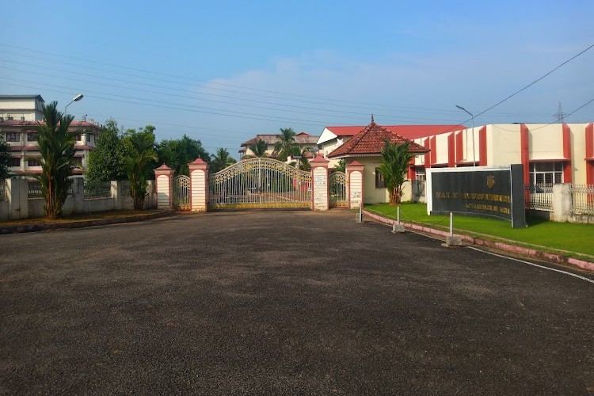
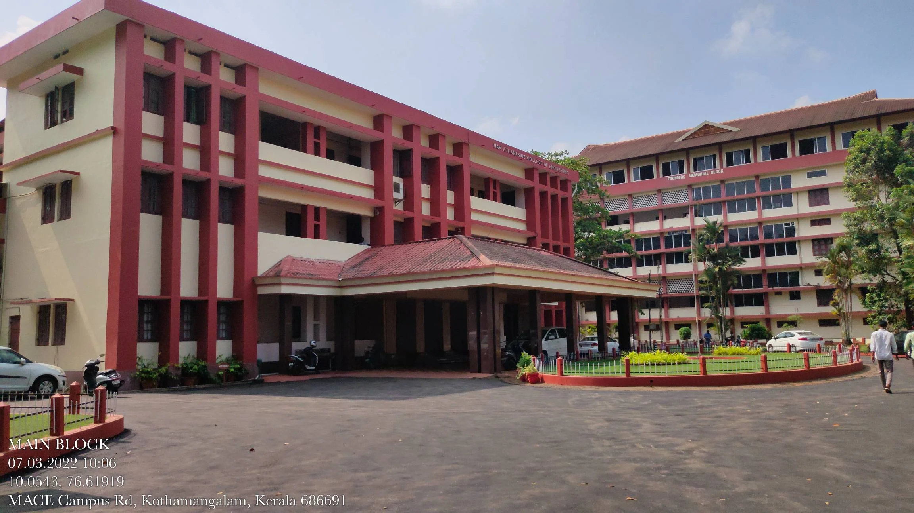

Rooted in a real campus.
Reimagined in watercolour.
The campus illustrations interpret Mar Athanasius College of Engineering, Kothamangalam. They are generated artwork informed by photographs, not photographs or an accurate campus map.
Campus artwork

The campus tour reference
The hero artwork follows the main block, Founders Block and oval lawn visible in the campus tour supplied by the requester: Campus tour — Mar Athanasius College of Engineering, VA Clicks (published 29 June 2023). Visual references were inspected at 00:01, 00:08 and 00:14. This is a 2023 reference, not a current survey. The illustrated view still involves artistic interpretation.
Video frames are retained locally for reference; the original video is not republished here.
Loading screen
The loading screen redraws the hero artwork as a blue-ink pen drawing (contours and cross-hatching generated from the painting), then washes the original colours back in. The torch beside the title is traced from the Kerala Students Union logo supplied by the requester; it is used as an identity mark for this unit website.
Additional architecture references


Additional architectural reference: main entrance and portico. Original photographs belong to their respective owners.
Current college material

The 2026 induction artwork is from MACE's August 2026 upload. Event details come from the college's Student Induction Programme 2026 page. This is a college event, not a claimed KSU event. The old URL slug is retained by the college. The age of the campus photo embedded in the artwork is unknown.
Organisation and links
- @ksu.mace was supplied by the requester. Instagram posts could not be independently retrieved; this website links to the profile without fabricating a feed.
- Kerala Students Union — organisation reference.
- Indian National Congress — KSU affiliation reference. Kerala Congress and its student organisation KSC are distinct.
- Mar Athanasius College of Engineering — college identity and campus information.
Typography & identity
Chilanka and Caveat give the hero a light handwritten style inspired by the Bethlehem Kudumba Unit poster; these are similar fonts, not a verified identification of the film lettering. Manjari is used for other Malayalam headings, Noto Sans Malayalam for body copy, and DM Sans for English navigation. Fonts are self-hosted Google Fonts distributions. The KSU letter mark is a website design treatment, not a verified reproduction of the organisation's official emblem.
Research checked 19 October 2026. This student organisation website is separate from the official college website.